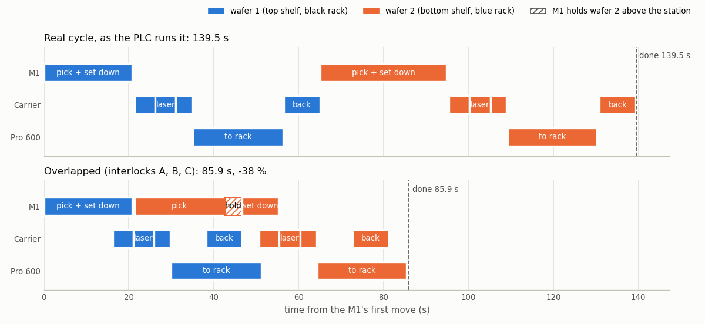
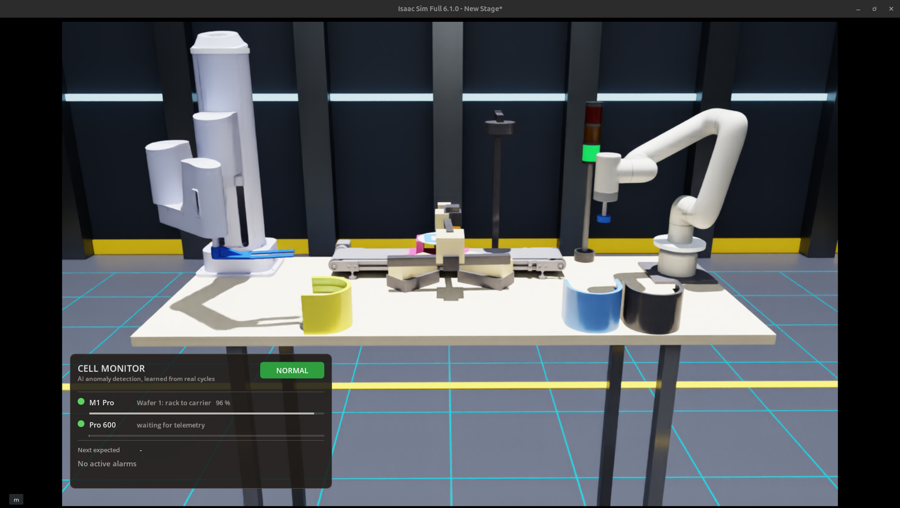

Wafer-cell digital twin - Lab 6
Lab 6: Making the Real Cell Faster with the Twin
Before you start: Read the introduction, safety rules and network setup. The appendices this lab refers to are on the same page.
Code repository: JatinSatyam26/wafer-cell-digital-twin (commit 75990ed)
Printable manual: Lab 6 (PDF)
Course data: course_materials.zip (unzip into your home folder as ~/course_materials/)
Lab Objective
In this lab you measure the real two-wafer cycle from the cell's own programmable logic controller (PLC) log. You then use the twin's replay of the robots' recorded motion to find the moments when each robot is already clear of the conveyor belt. Two small edits to the robot bridge scripts, with no PLC change, cut the cycle on the real cell from 139.9 s to 103.9 s (−26 %), and all three completed overlapped cycles of a later recording repeated the result. You reproduce these numbers from the logs, compare them with the twin's prediction, and learn the new safety rule that comes with the change.
6.1 About Cycle Time and the PLC Handshake
The PLC sequencer (the cell's original PLC program and bridge scripts; see Acknowledgments) runs the cell one thing at a time. Appendix B lists all of its steps. This lab uses only a few of them: step 1 (M1 places a wafer in the carrier), step 2 (acknowledge the M1), steps 3–7 (belt, laser, belt, vision), steps 8/9 (Pro 600 to the blue or black rack), step 10 (acknowledge the Pro 600) and step 11 (belt back to the datum).
Every robot job follows the same four-stage handshake:
- The PLC writes a job number to the robot's command register.
- The bridge runs the job and writes status DONE (2).
- The PLC acknowledges by setting the command back to 0.
- The bridge sees the 0 and writes status IDLE (0). Only then does the PLC leave the acknowledge step.
Why the cell waited. Before the change, each bridge ran its whole move list, including the return to HOME, and only then reported DONE. The belt therefore waited for the M1's trip back to HOME (about 5 s per wafer) and for the Pro 600's trip to the rack and back (about 13 s per wafer). Neither trip has anything to do with the belt.
The two interlock changes. An interlock is a condition that must be true before the next move may start. Change A lets the belt leave for the laser as soon as the M1's fork has withdrawn from the carrier (waypoint P7). Change B lets the belt return as soon as the Pro 600 has lifted the wafer off the carrier (pose LIFT_ST). At that moment each bridge reports DONE, waits for the acknowledge, reports IDLE, and only then finishes its moves. No PLC change was needed, because the sequencer already acknowledges on status 2 and then waits only for status 0.
The handshake trap. The first attempt reported DONE early but still sent IDLE only after HOME. The cycle took 139.88 s, with no gain. The PLC acknowledged at once, then sat in step 2 for 5.07 s and in step 10 for about 13 s, waiting for IDLE. DONE helps only if IDLE also comes early.
6.2 What You Need
Complete Lab 1 (read-only bridge, Step_Mirror = holding register 30) and Lab 2 (live twin) first. You also need basic Python and shell skills. Sections 6.3–6.6 and 6.8 use recorded data only and need no connection to the cell.
Table 6.1: Equipment and software
| Item | Version or detail |
|---|---|
| Twin laptop | Ubuntu 24.04.5 LTS, NVIDIA GeForce RTX 4060 Laptop GPU |
| ROS 2 (Robot Operating System 2) | Jazzy |
| Python | system Python 3.12.3, numpy 1.26.4, matplotlib 3.6.3 |
| Twin code | ~/wafer-cell-digital-twin, branch main, commit 75990ed |
| Isaac Sim | 6.1.0 (Section 6.7 only) |
| Course data | ~/course_materials/lab6_cycle_time/ (PLC logs in data/cell_logs/, 3.4 MB) and ~/course_materials/cell_reference/ |
| Replay input | ~/wafer_physics/run1.npz (632 KB), supplied by the instructor |
Warning: After the change, "PLC idle" no longer means that both robots have stopped. When the PLC returns to step 0, the Pro 600 is still driving home for about 4 s. Before anyone reaches into the cell, wait until both arms are at HOME. Watch the arms or the live twin, not the PLC step.
Warning: Never run
m1_bridge_2_disks.py,pro600_bridge_2_racks.pyorRun_logger.pyfrom the twin laptop. Never connect to the Pro 600 port 5001 or the M1 ports 29999 and 30003. Change B lets the Pro 600 swing over the belt while the carrier moves back under it; the twin's contact-physics replay shows no contact other than the intended hand-offs, and any change to the posesCLEAR1orCLEAR2needs that check again.
6.3 Measure the Real Cycle from the PLC Log
The logger Run_logger.py on the cell laptop polls Step_Mirror every 0.05 s. It writes a row with trigger = step each time the step changes, and a tick row every 1 s with both robots' joint angles. This lab uses these definitions:
- START is the first
steprow with a step other than 0 after a step-0 row. - Idle is the next
steprow with step 0. Cycle = idle − START. - A step starts at its
steprow and ends at the nextsteprow.
Steps shorter than one poll (usually 2, 5, 10 and 12) get no row. The delay between a PLC change and its row stamp is the same for every row, so it cancels when you subtract two times.
- Open
~/course_materials/cell_reference/python/current/Run_logger.pyin a text editor. InFAST_REGS, confirm thatstepis holding register 30. - Print the header row of one log:
head -1 ~/course_materials/lab6_cycle_time/data/cell_logs/cell_log_2026-10-26.csvExpected: 56 column names, starting timestamp,trigger,run_no,disk_no,step,step_name,. Find the M1 joint columns m1_j1_deg … m1_j4_deg and the Pro 600 joint columns p6_j1 … p6_j6.
- Change to the data folder:
cd ~/course_materials/lab6_cycle_time/data- Extract every run and every step:
PYTHONDONTWRITEBYTECODE=1 python3 extract_steps.pyExpected: a list of 19 STARTs, also saved as extract_steps_output.txt, and the files runs_summary.csv, step_table.csv, robot_motion.csv and prediction_vs_measured.csv. Representative lines (shortened on the right):
2026-10-26 18:44:33 139.93 s sequential (before the change) complete
2026-10-27 18:55:52 139.88 s early DONE only (PLC still waits for IDLE) complete
2026-10-27 19:09:12 103.91 s overlapped (A+B) complete
2026-11-04 14:23:11 104.08 s overlapped (A+B) complete
2026-11-04 14:40:05 103.92 s overlapped (A+B) complete
2026-11-04 14:54:54 103.96 s overlapped (A+B) complete
- Use only runs marked
complete. The list also holds runs that stopped on a PLC fault, one cycle paused for about 20 minutes, and one-wafer runs; these are not timing runs. - In the same folder, compare the mean step durations before and after the change:
PYTHONDONTWRITEBYTECODE=1 python3 per_step_compare.pyExpected: wafer 1 step 1 falls from 21.39 s to 16.33 s and the Pro 600 step (P6, steps 8 and 9 pooled) from 21.68 s to 8.81 s. Wafer 2 shows the same pattern (30.36 → 25.29 s and 21.55 → 8.80 s). Belt, laser and vision steps stay within 0.02 s. The output ends with sum of mean changes -35.76 s.
Tip: Check: only the two robot steps got shorter, by 5.07 s per wafer for the M1 (change A) and by about 12.8 s per wafer for the Pro 600 (change B). Write the before and after values into Table 6.4.
6.4 Draw the Before/After Gantt Chart
A Gantt chart gives each resource its own row and draws each step as a bar along the time axis. Gaps in a row show where that resource waits.
- Move to the figures folder and draw the chart:
cd ../figures && PYTHONDONTWRITEBYTECODE=1 python3 plot_gantt.pyExpected: a line starting wrote and ending in the name of the new PNG file.
- Open the image and compare it with Figure 6.1.
 Figure 6.1: The real cell's two-wafer cycle from the PLC log, before the change (top) and after changes A and B (bottom). Solid bars are PLC steps, numbered by
Figure 6.1: The real cell's two-wafer cycle from the PLC log, before the change (top) and after changes A and B (bottom). Solid bars are PLC steps, numbered by Step_Mirror. Hatched bars show a robot still moving after it has reported DONE and IDLE. The dashed line marks PLC idle (139.9 s before, 103.9 s after); after the change both robots are home at about 108 s.
- In the lower panel, find the hatched M1 bars that overlap belt step 3 and the hatched Pro 600 bars that overlap belt step 11.
Tip: Check: you can point at the two places where time was saved, and at the place where the PLC is idle while the Pro 600 is still moving.
6.5 Predict the Overlap with the Twin
The twin script make_overlap_schedule.py starts from a recorded cycle of the cell (both arms at 50 Hz plus the PLC log's events). It computes the tool positions by forward kinematics and finds, in the data, when the M1's fork seat is above 170 mm after the set-down (A), when the Pro 600's cup tip is 25 mm above its grip height (B), and when each arm is within 3 mm of HOME. It then shifts whole recorded moves in time, without re-timing any move. The rule for change A is one line:
clear = w['clear'] + dc; m1_home = w['m1_home'] + dc
t3 = (clear + LAT) if 'A' not in OFF else (m1_home + LAT)With A on, the belt leaves (t3) one PLC latency (LAT) after the fork is clear; with A off, one latency after the M1 is home.
- Change to the twin repository and load ROS 2:
cd ~/wafer-cell-digital-twin && source /opt/ros/jazzy/setup.bash- Build the A + B schedule, with change C switched off:
PYTHONDONTWRITEBYTECODE=1 python3 tools/isaac/physics/make_overlap_schedule.py --src ~/wafer_physics/run1.npz --out /tmp/run1_AB.npz --no CExpected last lines:
PLC latency 0.51 s, return ride 8.56 s, real cycle 139.5 s
overlapped cycle 107.7 s vs real 139.5 s (-22.8 %); interlocks off: ['C']
- Repeat the command with
--no A,B,C, then--no B,C, then--no A,C. Compare your results with Table 6.2.
Table 6.2: The twin's predictions from the recorded cycle (real cycle 139.5 s)
| Interlocks on | --no value | Predicted cycle (s) |
|---|---|---|
| none (method check) | A,B,C | 140.1 |
| A only | B,C | 129.9 |
| B only | A,C | 118.0 |
| A + B | C | 107.7 |
| A + B + C | (empty) | 85.9 |
Tip: Check: with every interlock off, the rebuild (140.1 s) lies within 0.6 s of the real 139.5 s. The method reproduces the real cycle before you trust its predictions.
The twin also predicts a third change, C: the M1 picks the next wafer early and holds it above the load station until the carrier returns. Figure 6.2 shows the twin's timeline chart for all three changes. Only A and B were applied to the cell.

Figure 6.2: The twin's prediction for changes A, B and C, built from the same recorded cycle. Top: the real cycle as the PLC runs it (139.5 s). Bottom: the predicted overlapped cycle (85.9 s), including the M1 holding wafer 2 above the station. Blue bars belong to wafer 1, orange bars to wafer 2.6.6 Read the Interlock Change
- Change to the cell's script folder and compare the two versions of each bridge:
cd ~/course_materials/cell_reference/python
diff -u before_interlock_change_2026-10-29/m1_bridge_2_disks.py current/m1_bridge_2_disks.py
diff -u before_interlock_change_2026-10-29/pro600_bridge_2_racks.py current/pro600_bridge_2_racks.pyExpected: 17 added lines in total (10 in the M1 bridge, 7 in the Pro 600 bridge), each marked # NEW, and no line removed.
- Read edit A in
place_in_carrierof the M1 bridge. The M1 reports right after the "withdraw" move toP7and drives HOME only after the handshake:
m1.goto(P7, "withdraw", "J")
PLC.write_register(STAT_REG, DONE) # NEW: fork is clear
while True: # NEW: wait for the PLC's acknowledge
rr = PLC.read_holding_registers(CMD_REG, count=1) # NEW
if not rr.isError() and rr.registers[0] == 0: # NEW
break # NEW
time.sleep(0.05) # NEW
PLC.write_register(STAT_REG, IDLE) # NEW: the PLC may move the belt now
m1.goto(HOME, "home", "J")The other three # NEW lines in this file make the PLC connection available inside the function.
- Read edit B in
transferofcurrent/pro600_bridge_2_racks.py. The same seven lines followgoto(arm, LIFT_ST, "lift straight up", bcast), before the moves toCLEAR1,CLEAR2and the rack. - Open
~/course_materials/cell_reference/plc/sequencer.stfand find step 2:
2: (* ack M1, then verify the disk actually landed - 5 s grace *)
Cmd_Word_2 := 0;
M1_Job := 0;
IF Status_Word_2 = 0 THEN
IF Disk_In_Carrier THEN
Step := 3;
ELSIF T_Disk.Q THEN
Fault_Code := 3;
Fault := TRUE;
END_IF;
END_IF;
Step 10 does the same for the Pro 600 (Cmd_Word := 0, then wait for Status_Word = 0).
Tip: Check: you can trace one handshake through both files. The bridge writes DONE, the sequencer moves to step 2 and writes 0, the bridge writes IDLE, and the sequencer starts the belt in step 3.
6.7 Watch and Measure an Overlapped Cycle on the Cell
On the cell, edits A and B are already in place; the cell's owner applied them and kept them. In this section the instructor runs one normal two-wafer cycle while you watch it, read-only, in the live Isaac twin.
Warning: The instructor presses START, with the cell clear, the E-stop (emergency stop) in reach and everyone watching. Stay outside the cell until both arms are at HOME. Applying or removing the bridge edits is an instructor-only step: the bridges write to the PLC and command both robots.
- Start the read-only bridge and the live Isaac twin as in Lab 1 and Lab 2.
- Confirm that both arms in the twin follow the real arms while the cell is idle.
- About 15–20 s after START, watch the twin. The carrier with wafer 1 leaves for the laser while the M1 is still swinging back to HOME (Figure 6.3).
- At the end of the cycle, watch the Pro 600. It is still driving home after the belt has returned.

Figure 6.3: The live Isaac twin following the real cell during a normal overlapped cycle at the cell. The carrier with wafer 1 has already left the load point for the laser while the M1 is still returning to HOME (change A). The cell monitor panel reads NORMAL.- If the instructor ran the logger during the cycle, save the new rows of
cell_log.csvas a new.csvfile in~/course_materials/lab6_cycle_time/data/cell_logs/, then repeat Sections 6.3 and 6.4. Expect a cycle close to 103.9 s; the five recorded overlapped runs span 103.88–104.08 s.
Note: To apply the change to a fresh copy of the bridges, the instructor adds the
# NEWlines, restarts both bridge scripts withSPEEDat 20, keeps the logger andvision_bridge.pyrunning, and presses START once. To undo it, the instructor deletes theNEWlines and restarts both bridges.
6.8 Compare Prediction and Measurement
- Open
~/course_materials/lab6_cycle_time/data/prediction_vs_measured.csv. Each row compares one predicted step start with the measured one, both counted from wafer 1's step 1. - Find the rows of the first overlapped run (103.91 s in Section 6.3). Most steps fall within 0.4 s of the prediction. Identify the steps that do not.
- Compare the end of the cycle. The twin predicted 107.7 s; the PLC went idle at 103.91 s, about 3.8 s earlier.
- Find the row
both robots home. Both robots were home 108.3 s after START, 0.6 s after the predicted end.
Tip: Check: the twin's predicted end is the moment the last robot is back at HOME, plus one PLC latency. The PLC goes idle when the carrier is back, while the Pro 600 is still moving. Measured to the robots' return, the prediction is close.
6.9 Results
Table 6.3: Expected results
| Quantity | Value | Source data |
|---|---|---|
| Before the change | 139.93 s (139.9 s) | cell_log_2026-10-26.csv |
| After A + B | 103.91 s (103.9 s) | cell_log_2026-10-27.csv, second START |
| Reduction | 25.7 %, rounded to 26 % | the two runs above |
| Repeats in a later recording | 104.08, 103.92, 103.96 s (3 of 3 completed overlapped cycles) | cell_log_2026-11-04.csv |
| All completed overlapped cycles | 5 cycles, 103.88–104.08 s | cell_log_2026-10-27.csv, cell_log_2026-10-28.csv, cell_log_2026-11-04.csv |
| DONE early, IDLE late | 139.88 s (no gain) | cell_log_2026-10-27.csv, first START |
| M1 step 1, per wafer | −5.07 s (change A) | per_step_compare.txt |
| Pro 600 step 8/9, per wafer | −12.87 s and −12.75 s (change B) | per_step_compare.txt |
| Twin prediction, A + B | 107.7 s | make_overlap_schedule.py --no C |
| START → both robots home (overlapped) | 107.7–108.3 s | runs_summary.csv |
Table 6.4: Your results
| Run | START time | Idle time | START → idle (s) | Wafer 1 step 1 (s) | Wafer 1 step 8/9 (s) |
|---|---|---|---|---|---|
| Before the change | |||||
| After the change | |||||
| New run (if any) |
6.10 Troubleshooting
Table 6.5: Troubleshooting
| Problem | Likely cause | Fix |
|---|---|---|
| DONE is reported early but the cycle does not change | Steps 2 and 10 also wait for IDLE (0), which the bridge sends only after HOME | After DONE, wait for command = 0, write IDLE, then drive home (the # NEW lines) |
| Steps 2, 5, 10 and 12 do not appear in the log | They are shorter than one logger poll | Expected; compute durations from the steps that are present |
| The PLC shows idle while a robot still moves | By design after A + B: the Pro 600 drives home for about 4 s after idle | Wait for both arms at HOME (Section 6.2 warning) |
| Fault 3 "disk not in carrier" shortly after the M1's pick | The PLC's 5 s check in step 2 did not see the wafer | The instructor checks the carrier sensor and the set-down, then resets the fault |
make_overlap_schedule.py stops with a file error on --src | ~/wafer_physics/run1.npz lies outside the repository | Ask the instructor for the file and place it at that path |
6.11 Check Your Understanding
- Which PLC steps became shorter after changes A and B, and by how much per wafer? Why did the belt, laser and vision steps not change?
- Why did reporting DONE early change nothing on the first attempt? Point to the line in
sequencer.stfthat explains it. - The twin predicted 107.7 s and the cell measured 103.9 s. Use
robot_motion.csvand the line that setsT_END_NEWinmake_overlap_schedule.pyto explain the 3.8 s difference. - After the change, "PLC idle" no longer means "both robots stopped". Design a read-only signal that tells the operator when both arms are at HOME. Which data would it use?
6.12 Files Used in This Lab
Table 6.6: Files used in this lab
| File | Purpose |
|---|---|
lab6_cycle_time/data/cell_logs/*.csv | The cell's recorded PLC logs |
lab6_cycle_time/data/extract_steps.py | Cycle times, step table, robot motion, prediction comparison |
lab6_cycle_time/data/per_step_compare.py | Mean step durations before and after the change |
lab6_cycle_time/figures/plot_gantt.py | Before/after Gantt chart (Figure 6.1) |
tools/isaac/physics/make_overlap_schedule.py | The twin's overlap analysis and cycle prediction |
tools/isaac/physics/plot_cycle_timeline.py | The twin's timeline chart (Figure 6.2) |
docs/results/cycle_optimisation/BENCH_CHANGES_A_B.md | The bridge edits and how to apply them |
cell_reference/python/current/ | Bridge scripts with the # NEW lines, and Run_logger.py |
cell_reference/python/before_interlock_change_2026-10-29/ | Bridge scripts before the change |
cell_reference/plc/sequencer.stf | The PLC sequencer |
Course files are under ~/course_materials/; tools/ and docs/ paths are in the twin repository ~/wafer-cell-digital-twin.
Credits: see Acknowledgments.